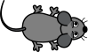
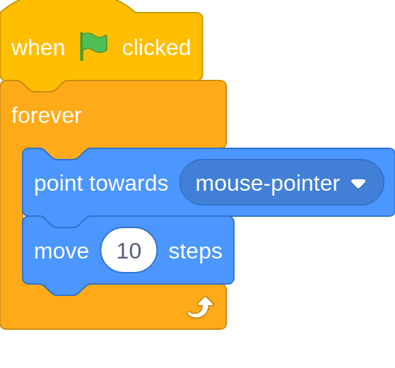
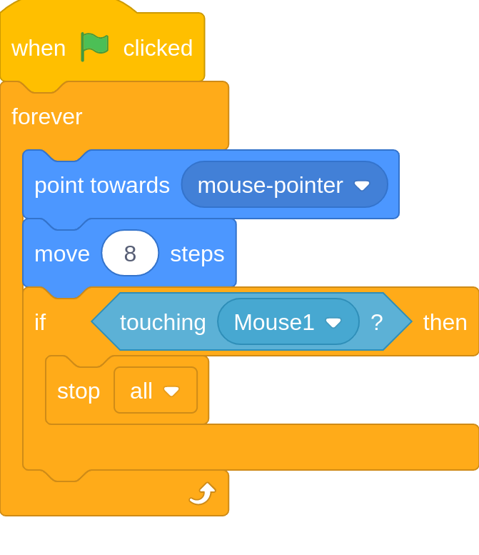
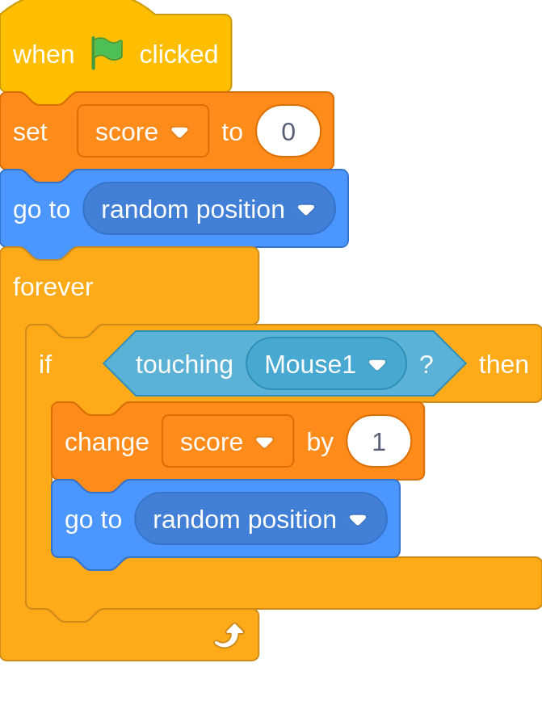

Scratch Lesson 2
You need to open a scratch project to follow this lesson, open one by clicking here.
In this lesson, we will make a cat and mouse game.
In this game, you get chased by a cat and you are a mouse.
We will also add a points system.
First, will code the mouse. Leave the scratch cat and make another sprite by pressing the button in the bottom right of the sprite area.
Search mouse and you should see one like below. Click on it to add it.

Now add the blocks below, we will explain them after.

When Green Flag Clicked: Detects when the green flag is clicked and runs the code underneath it.
Forever: This is the first and the most simple loop we will do. It runs anything between it until the stop sign is clicked.
Point Towards Mouse Pointer: It is quite self-explanitary although, you can click "Mouse Pointer" and change to a sprite.
Move 10 Steps: Makes the sprite move ten steps/pixels in the direction it is pointing. Ten steps is a lot less than it looks!
That wasn't so bad was it! Now we will make the cat follow the mouse.
Your mouse should follow your mouse-pointer like in this:
Add this code to the cat sprite.

New Blocks:
if [ ] then: looks at the items between [ and ] and works out if it is true. If it is true then it runs the blocks inside it, otherwise it does not.
touching Mouse1: It detects if the sprite is touching the Mouse1 sprite and it is true if it does. The mouse 1 can be replaced with other sprites, mouse-pointer and edge.
stop all: Stops everything that is going on in the project. You can replace the all with other things, and we will look at that later.
Run your project now. You might find that when you get caught for the first time, you can't stop getting caught emidiatly.
There is a better way to fix this, but for now just drag the cat away when you are caught.
This is what your project should be like:
Now we will make the score system. To get points you make your mouse touch a apple.
Click the button to add another sprite and search apple. Then select the one that looks like this:
Now click on the variables section in the blocks section. Then you will see a button "Make a variable".
Click that button and type in "score". Leave the other options as they are. Then press "OK".
A variable is a name for a number or word. The number or work can change but you can still access it with the name.
Now add the code below:
Note: click "my variable" in the code and change it to score.

New Blocks:
Set score to 0: This sets the value variable called "score" to 0. 0 could be replaced with any text or numbers.
Go to random position: does what it says it would do, go to a random position. random position can be replaced with mouse-pointer and any sprite.
Change Score by 1: This adds 1 to the value of "score". The 1 can be changed to another number.
Now try running it. The score is in the top left corner of the screen.
It should do the same as below:
If you found the game too hard, try changing the move 8 steps to move 5 steps.
Thank you for using Lesson 1 of the Innovation Studios online coding tutorial. Please report any errors in this lesson,
coding related or not to me. If you are having problems, send me a message on google chat.
If you need any other programming help, contact me there aswell. Bye for now - Michael.